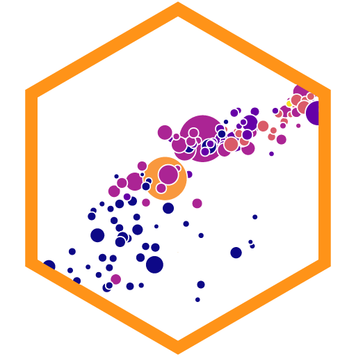

Using Markdown
Markdown is a special kind of markup language that lets you format text with simple syntax. You can then use a converter program like pandoc to convert Markdown into whatever format you want: HTML, PDF, Word, PowerPoint, etc. (see the full list of output types here)
Basic Markdown formatting
| Type… | …to get |
|---|---|
|
Some text in a paragraph. More text in the next paragraph. Always use empty lines between paragraphs. |
*Italic* or _Italic_ |
Italic |
**Bold** or __Bold__ |
Bold |
# Heading 1 |
Heading 1 |
## Heading 2 |
Heading 2 |
### Heading 3 |
Heading 3 |
(Go up to heading level 6 with ######) |
|
[Link text](https://www.example.com) |
Link text |
 |
 |
`Inline code` with backticks |
Inline code with backticks |
| Block of code with triple backticks: | |
|
|
| Optionally specify a language: | |
|
|
> Blockquote |
|
|
|
|
|
Horizontal line |
Horizontal line |
Math
Basic math commands
Markdown uses LaTeX to create fancy mathematical equations. There are like a billion little options and features available for math equations—you can find helpful examples of the the most common basic commands here. In this class, these will be the most common things you’ll use:
| Description | Command | Output |
|---|---|---|
| Letters | ||
| Roman letters | a b c d e f |
\(a\ b\ c\ d\ e\ f\) |
| Greek letters (see this for all possible letters) | \alpha \beta \Gamma \gamma \Delta \delta \epsilon |
\(\alpha\ \beta\ \Gamma\ \gamma\ \Delta\ \delta\ \epsilon\) |
Letters will automatically be italicized and treated as math variables;
if you want actual text in the math, use \text{} |
Ew: Treatment = \betaGood: \text{Treatment} = \beta |
Ew: \(Treatment = \beta\) Good: \(\text{Treatment} = \beta\) |
Extra spaces will automatically be removed; if you want a space, use \ |
No space: x ySpace: x\ y |
No space: \(x y\) Space: \(x\ y\) |
| Superscripts and subscripts | ||
Use ^ to make one character superscripted. |
x^2 |
\(x^2\) |
Wrap the superscripted part in {} if there’s more than one character |
x^{2+y} |
\(x^{2+y}\) |
Use _ to make one character subscripted |
\beta_1 |
\(\beta_1\) |
Wrap the subscripted part in {} if there’s more than one character |
\beta_{i, t} |
\(\beta_{i, t}\) |
| Use superscripts and subscripts simultaneously | \beta_1^{\text{Treatment}} |
\(\beta_1^{\text{Treatment}}\) |
| You can even nest them | x^{2^{2^2}} |
\(x^{2^{2^2}}\) |
| Math operations | ||
| Addition | 2 + 5 = 7 |
\(2 + 5 = 7\) |
| Subtraction | 2 - 5 = -3 |
\(2 - 5 = -3\) |
| Multiplication | x \times yx \cdot y |
\(x \times y\) \(x \cdot y\) |
| Division | 8 \div 2 |
\(8 \div 2\) |
| Fractions | \frac{8}{2} |
\(\frac{8}{2}\) |
Square roots; use [3] for other roots |
\sqrt{81} = 9\sqrt[3]{27} = 3 |
\(\sqrt{81} = 9\) \(\sqrt[3]{27} = 3\) |
| Summation; use sub/superscripts for extra details | \sum x\sum_{n=1}^{\infty} \frac{1}{n} |
\(\sum x\) \(\sum_{n=1}^{\infty} \frac{1}{n}\) |
| Products; use sub/superscripts for extra details | \prod x\prod_{n=1}^{5} n^2 |
\(\prod x\) \(\prod_{n=1}^{5} n^2\) |
| Integrals; use sub/superscripts for extra details | \int x^2 \ dx\int_{1}^{100} x^2 \ dx |
\(\int x^2 \ dx\) \(\int_{1}^{100} x^2 \ dx\) |
| Extra symbols | ||
| Add a bar for things like averages | \bar{x} |
\(\bar{x}\) |
| Use an overline for longer things | Ew: \bar{abcdef}Good: \overline{abcdef} |
Ew: \(\bar{abcdef}\) Good: \(\overline{abcdef}\) |
| Add a hat for things like estimates | \hat{y} |
\(\hat{y}\) |
| Use a wide hat for longer things | Ew: \hat{abcdef}Good: \widehat{abcdef} |
Ew: \(\hat{abcdef}\) Good: \(\widehat{abcdef}\) |
| Use arrows for DAG-like things | Z \rightarrow Y \leftarrow X |
\(Z \rightarrow Y \leftarrow X\) |
| Bonus fun | ||
| Use colors!; see here for more details and here for a list of color names | {\color{red} y} = {\color{blue} \beta_1 x_1} |
\({\color{red} y} = {\color{blue} \beta_1 x_1}\) |
Using math inline
You can use math in two different ways: inline or in a display block. To use math inline, wrap it in single dollar signs, like $y = mx + b$:
Type…
Based on the DAG, the regression model for estimating the effect of education on wages
is $\hat{y} = \beta_0 + \beta_1 x_1 + \epsilon$, or $\text{Wages} = \beta_0 + \beta_1 \text{Education} + \epsilon$.…to get…
Based on the DAG, the regression model for estimating the effect of education on wages is \(\hat{y} = \beta_0 + \beta_1 x_1 + \epsilon\), or \(\text{Wages} = \beta_0 + \beta_1 \text{Education} + \epsilon\)
Using math in a block
To put an equation on its own line in a display block, wrap it in double dollar signs, like this:
Type…
The quadratic equation was an important part of high school math:
$$
x = \frac{-b \pm \sqrt{b^2 - 4ac}}{2a}
$$
But now we just use computers to solve for $x$.…to get…
The quadratic equation was an important part of high school math:
\[ x = \frac{-b \pm \sqrt{b^2 - 4ac}}{2a} \]
But now we just use computers to solve for \(x\).
Dollar signs and math
Because dollar signs are used to indicate math equations, you can’t just use dollar signs like normal if you’re writing about actual dollars. For instance, if you write This book costs $5.75 and this other costs $40, Markdown will treat everything that comes between the dollar signs as math, like so: “This book costs \(5.75 and this other costs \)40”.
To get around that, put a backslash (\) in front of the dollar signs, so that This book costs \$5.75 and this other costs \$40 becomes “This book costs $5.75 and this other costs $40”.
Tables
There are a few different ways to hand-create tables in Markdown—I say “hand-create” because it’s normally way easier to use R to generate these things with packages like {gt} or {knitr} or {kableExtra}. The two most common are simple tables and pipe tables. You should look at the full documentation here.
For simple tables, type…
Right Left Center Default
------- ------ ---------- -------
12 12 12 12
123 123 123 123
1 1 1 1
Table: Caption goes here…to get…
| Right | Left | Center | Default |
|---|---|---|---|
| 12 | 12 | 12 | 12 |
| 123 | 123 | 123 | 123 |
| 1 | 1 | 1 | 1 |
For pipe tables, type…
| Right | Left | Default | Center |
|------:|:-----|---------|:------:|
| 12 | 12 | 12 | 12 |
| 123 | 123 | 123 | 123 |
| 1 | 1 | 1 | 1 |
Table: Caption goes here…to get…
| Right | Left | Default | Center |
|---|---|---|---|
| 12 | 12 | 12 | 12 |
| 123 | 123 | 123 | 123 |
| 1 | 1 | 1 | 1 |
Footnotes
There are two different ways to add footnotes (see here for complete documentation): regular and inline.
Regular notes need (1) an identifier and (2) the actual note. The identifier can be whatever you want. Some people like to use numbers like [^1], but if you ever rearrange paragraphs or add notes before #1, the numbering will be wrong (in your Markdown file, not in the output; everything will be correct in the output). Because of that, I prefer to use some sort of text label:
You can also use inline footnotes with ^[Text of the note goes here], which are often easier because you don’t need to worry about identifiers:
Front matter
You can include a special section at the top of a Markdown document that contains metadata (or data about your document) like the title, date, author, etc. This section uses a special simple syntax named YAML (or “YAML Ain’t Markup Language”) that follows this basic outline: setting: value for setting. Here’s an example YAML metadata section. Note that it must start and end with three dashes (---).
---
title: Title of your document
date: "June 4, 2024"
author: "Your name"
---You can put the values inside quotes (like the date and name in the example above), or you can leave them outside of quotes (like the title in the example above). I typically use quotes just to be safe—if the value you’re using has a colon (:) in it, it’ll confuse Markdown since it’ll be something like title: My cool title: a subtitle, which has two colons. It’s better to do this:
---
title: "My cool title: a subtitle"
---If you want to use quotes inside one of the values (e.g. your document is An evaluation of "scare quotes"), you can use single quotes instead:
---
title: 'An evaluation of "scare quotes"'
---Citations
One of the most powerful features of Markdown + pandoc is the ability to automatically cite things and generate bibliographies. to use citations, you need to create a BibTeX file (ends in .bib) that contains a database of the things you want to cite. You can do this with bibliography managers designed to work with BibTeX directly (like BibDesk on macOS), or you can use Zotero (macOS and Windows) to export a .bib file. You can download an example .bib file of all the readings from this class here.
Complete details for using citations can be found here. In brief, you need to do three things:
Add a
bibliography:entry to the YAML metadata:--- title: Title of your document date: "June 4, 2024" author: "Your name" bibliography: name_of_file.bib ---Choose a citation style based on a CSL file. The default is Chicago author-date, but you can choose from 2,000+ at this repository. Download the CSL file, put it in your project folder, and add an entry to the YAML metadata (or provide a URL to the online version):
--- title: Title of your document date: "June 4, 2024" author: "Your name" bibliography: name_of_file.bib csl: "https://raw.githubusercontent.com/citation-style-language/styles/master/apa.csl" ---Some of the most common CSLs are:
- Chicago author-date
- Chicago note-bibliography
- Chicago full note-bibliography (no shortened notes or ibids)
- APA 7th edition
- MLA 8th edition
Cite things in your document. Check the documentation for full details of how to do this. Essentially, you use
@citationkeyinside square brackets ([]):Type… …to get… Causal inference is neat [@Rohrer:2018; @AngristPischke:2015].Causal inference is neat (Rohrer 2018; Angrist and Pischke 2015). Causal inference is neat [see @Rohrer:2018, p. 34; also @AngristPischke:2015, chapter 1].Causal inference is neat (see Rohrer 2018, 34; also Angrist and Pischke 2015, chap. 1). Angrist and Pischke say causal inference is neat [-@AngristPischke:2015; see also @Rohrer:2018].Angrist and Pischke say causal inference is neat (2015; see also Rohrer 2018). @AngristPischke:2015 [chapter 1] say causal inference is neat, and @Rohrer:2018 agrees.Angrist and Pischke (2015, chap. 1) say causal inference is neat, and Rohrer (2018) agrees. After compiling, you should have a perfectly formatted bibliography added to the end of your document too:
Angrist, Joshua D., and Jörn-Steffen Pischke. 2015. Mastering ’Metrics: The Path from Cause to Effect. Princeton, NJ: Princeton University Press.
Rohrer, Julia M. 2018. “Thinking Clearly About Correlations and Causation: Graphical Causal Models for Observational Data.” Advances in Methods and Practices in Psychological Science 1 (1): 27–42. https://doi.org/10.1177/2515245917745629.
Other references
These websites have additional details and examples and practice tools:
- CommonMark’s Markdown tutorial: A quick interactive Markdown tutorial.
- Markdown tutorial: Another interactive tutorial to practice using Markdown.
- Markdown cheatsheet: Useful one-page reminder of Markdown syntax.
- The Plain Person’s Guide to Plain Text Social Science: A comprehensive explanation and tutorial about why you should write data-based reports in Markdown.